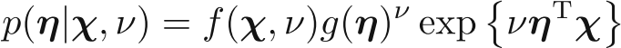

Exponential Family
Generic equation of exponential family of equation, parametrized by $\mu$ is:
It's conjugate prior: i.e., a prior p($\eta$), so that distribution has the same functional form as the prior is:

This would give posterior distribution as:
Bernoulli distribution
It is: p(x|$\mu$) = Bern(x|$\mu$) = $\mu^x$ (1 - $\mu$)$^{1-x}$
taking log and exponent, and rearranging, we would get:
p(x|$\mu$) = (1 - $\mu$) exp{ln ($\frac{\mu}{1 - \mu}$) x}
This gives $\eta$ = ln $\frac{\mu}{1 - \mu}$
Which in turn gives: $\mu$ = $\frac{1}{1 + exp(-\eta)}$ which is = $\sigma$ ($\eta$), also known as logistic sigmoid.
Now using $\sigma$ (-$\eta$) = 1 - $\sigma$ ($\eta$), we can write the Bernoulli distribution as:
p(x|$\eta$) = $\sigma$ (-$\eta$) exp($\eta$x)
Comparing it with the generic form of exponential form we get:
| Exp' dist' param | Bernoulli |
|---|
| u(x) | x |
| h(x) | 1 |
| g($\eta$) | $\sigma$ (-$\eta$) |
Multinomial distribution
Puting $\eta_i$ for ln $\mu_i$, we would get (in vector form):
p(x|$\eta$) = exp($\eta^T$x), so the parameters wrt exponential distribution is:
| Exp' dist' param | Multinomial |
|---|
| u(x) | x |
| h(x) | 1 |
| g($\eta$) | 1 |